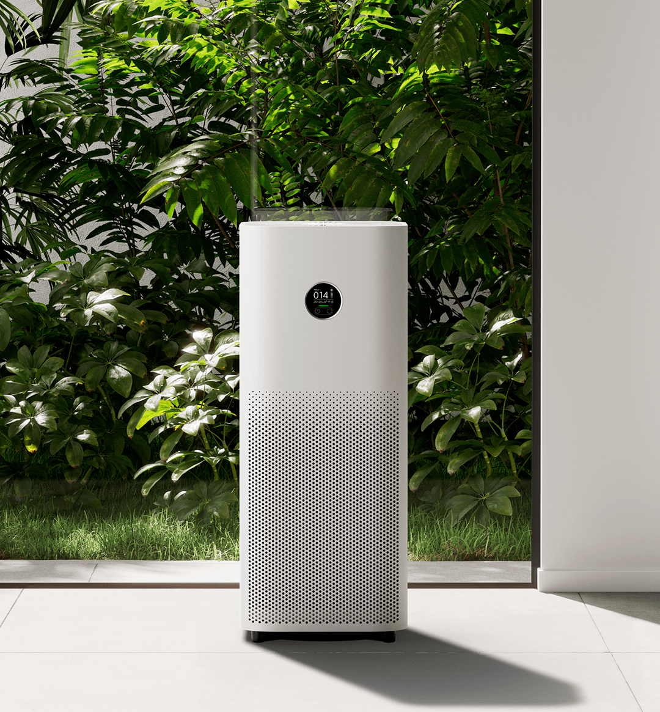
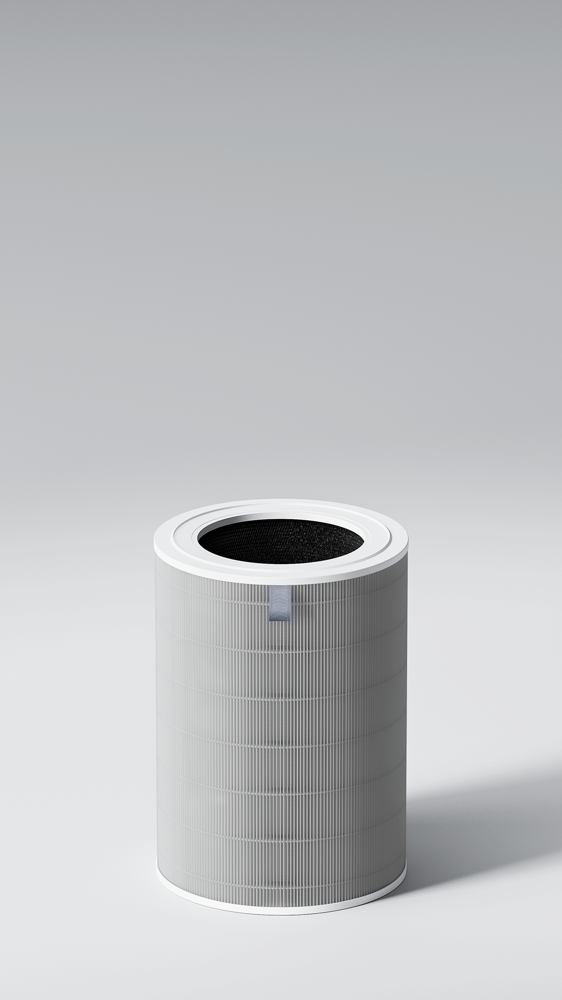
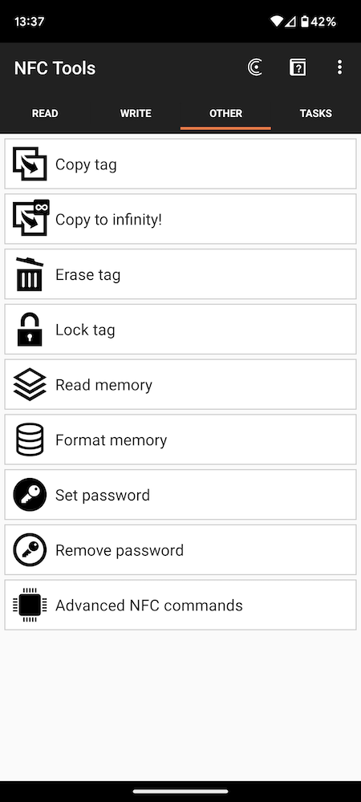

The filter's NFC tag counts down on a timer, it does not actually check
how dirty the filter is. So the Mi Home app keeps telling you to buy a
new filter even when it is still fine. This page makes the code needed
to reset that counter back to 100%.
What it's for
Made for the Xiaomi Mi Air Purifier 4. Should also work on the 2S, 3H,
Pro, Pro H, Elite, 4 Lite and 4 Pro since they use the same tag.


Generate the reset code
Enter the 14 character UID from the filter's NFC tag:
How to flash the tag (Android + NFC Tools app)
Install the free NFC Tools app from the Play Store.
Open the app, tap Read, and hold the phone on the filter's tag.
Write down the UID / Serial number shown (14 hex characters).
Type the UID into the box above and press Generate.
In NFC Tools go to Other, then Advanced NFC commands, and accept
the warning.

Set the I/O class to NfcA (ISO 14443-3A).
Paste in the whole reset command that was generated.
Hold the phone on the tag again and press Send command.
Open the Mi Home app, the filter should now show 100%.
Disclaimer
Only do this on a filter that has been checked and is still ok to use.
This only resets what the app says, it does not clean the filter.
Writing to the tag could fail sometimes, so do this at your own risk.